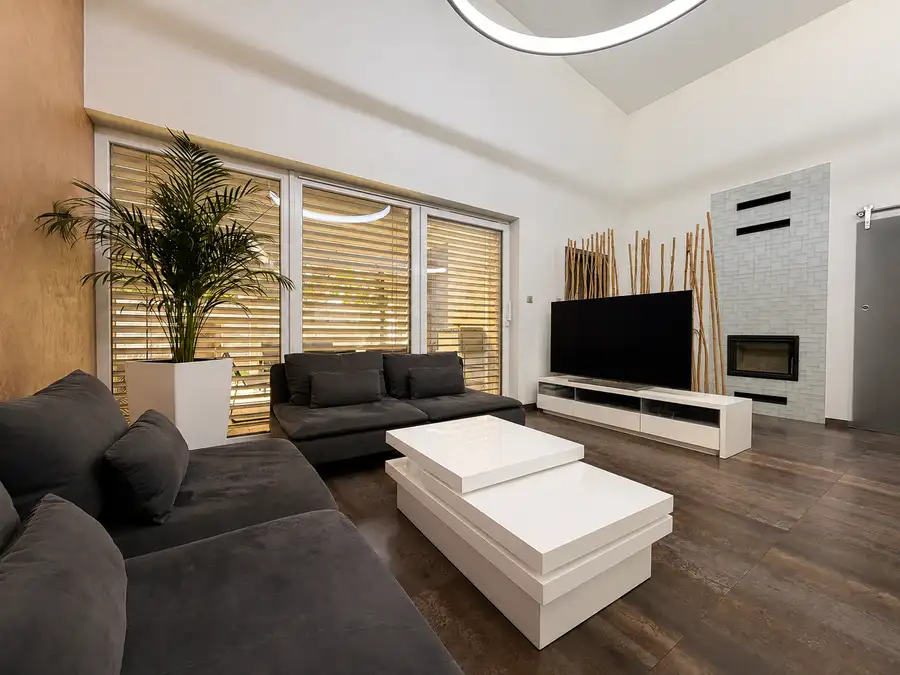
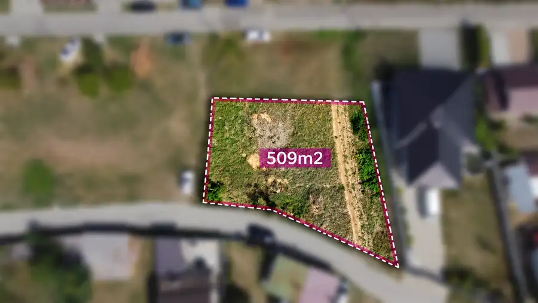
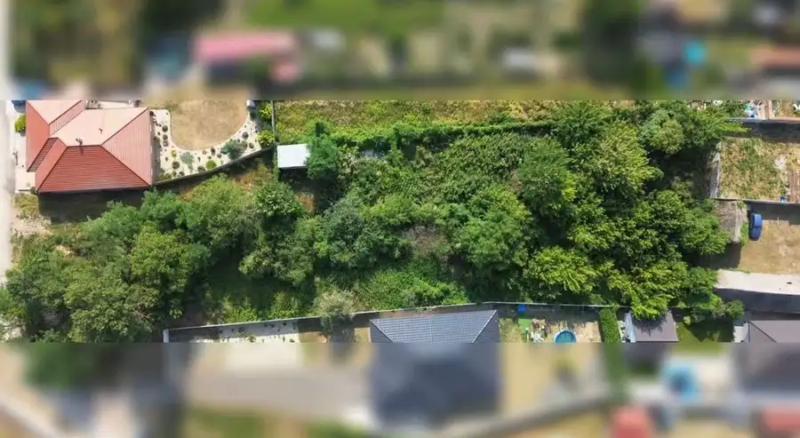

MIDPOINTREAL: predaj stavebných pozemkov v obci Kuklov 500-2000m2
Kuklov
- Plocha500 m²
O nehnuteľnosti
STAVEBNÉ POZEMKY S IS A VYDANOU UPI – MOŽNOSŤ KÚPY V CELKU AJ PO ČASTIPonúkame na predaj atraktívny stavebný pozemok s možnosťou kúpy v celku alebo rozdelený na samostatné parcely s výmerou približne 500 m².Každá parcela je dostupná za 21 000 €, čo predstavuje skvelú príležitosť na výstavbu rodinného domu alebo ako investíciu do budúcnosti.Výhody pozemku:-možnosť kúpy v celku alebo po jednotlivých parcelách-výmera parciel približne 500 m²-všetky inžinierske siete v dosahu-vydaná územnoplánovacia informácia (UPI)-rovinatý terén pripravený na realizáciu vášho projektu-pokojná lokalita s potenciálom budúcej výstavbyAk hľadáte miesto pre svoj vysnívaný dom alebo zaujímavú investičnú príležitosť, táto ponuka vám poskytuje flexibilitu pri výbere veľkosti pozemku podľa vašich predstáv.Cena:pozemok A: 21 000 €pozemok B: 21 000 €pozemok C: 21 000 €pozemok D: 21 000 €Odkúpenie celého pozemku: 75 000 €/ 2000m2 V cene je zahrnuté:-provízia realitnej kancelárie-kompletný právny servis-vypracovanie rezervačnej zmluvy-vypracovanie kúpno-predajnej zmluvy-vypracovanie návrhu na vklad-poplatok za vklad vlastníckeho práva-poplatok za overenie podpisov (Notár/matrika)-vybavenie financovania akoukoľvek bankou naším Hypotekárnym špecialistom-promptnejšie vybavenie znaleckých posudkov a geodeta-poistenie nehnuteľnosti, poistenie úveru Potrebujete rýchlo predať rodinný dom, byt, pozemok, garáž, chatku, chalupu alebo záhradu? Ponúknite nám nehnuteľnosť a my ju od Vás vieme pohotovo odkúpiť! Všetky informácie Vám rád zodpoviem na tel. 0904196016/ filipkova@midpointreal.sk
Parametre
| Druh | Pozemok pre rodinné domy |
|---|---|
| Dátum zverejnenia | 17. 7. 2026 |
| Dĺžka pozemku | 23 |
| Elektrina | Na pozemku - 230 V |
| Odpadové vody | Na pozemku - Žumpa |
| Plocha pozemku | 500 m² |
| Plyn | Pri pozemku |
| Pripravenosť k výstavbe | Schválené v územnom pláne |
| Terén pozemku | Rovinatý |
| Typ | Predaj |
| Voda | Pri pozemku - Verejný vodovod, Na pozemku - Studňa |
| Šírka pozemku | 22 |
Kde to je


Mohlo by Vás zaujímať

DomNové10 349 900 €MIDPOINTREAL: moderný RD s galériou, wellness-fitness zónou a 5m stropom Senica 181 m² Vzdušná obývačka s 5-metrovým stropom, otvorenou galériou, večery pri krbe, vlastná fitness & wellness zóna a veľká zastrešená terasa s…
PozemokNové5 50 000 €ŠAŠTÍN-STRÁŽE: na predaj stavebný pozemok s vybudovanými sieťami Šaštín-Stráže 509 m² Ponúkame na predaj pozemok s výmerou 509 m² v Šaštíne-Strážach, pripravený pre budúceho majiteľa na okamžitú realizáciu výstavby. Na pozemku sú…
PozemokNové 28 000 €MIDPOINTREAL: predáme stavebný pozemok v obci Čáry Čáry 500 m² STAVEBNÝ POZEMOK S IS A VYDANOU UPI – MOŽNOSŤ KÚPY V CELKU ALEBO 1/2Ponúkame na predaj atraktívny stavebný pozemok v obci Čáry, s možnosťou kúpy v…